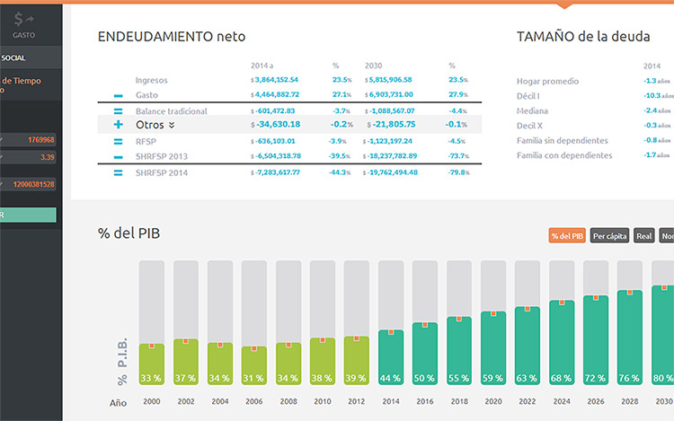
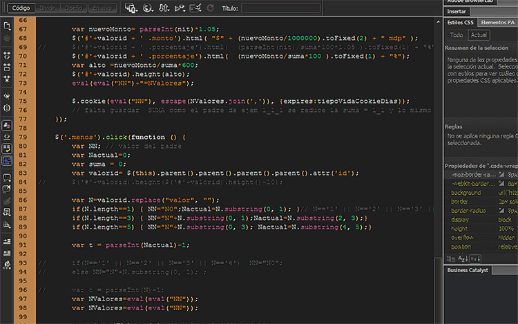

INTRODUCCIÓN


En el Centro de Investigación Económica y Presupuestaria, A.C. (CIEP), nos interesa analizar y, por ende, entender todas las diferentes vías en las que el gasto público (i.e. el Presupuesto de Egresos de la Federación, PEF) y los ingresos presupuestarios (i.e. la Ley de Ingresos de la Federación, LIF) interactúan y alteran el nivel de bienestar de la población mexicana. Además, es nuestro mandato institucional el evaluar la sostenibilidad de dicho sistema fiscal, propiciando el diálogo informado sobre quiénes, cómo y por cuánto tiempo es que éste se financiará, considerando la legislación vigente y la estructura demográfica del país. Es nuestro objetivo el delinear cómo es que los recursos presupuestarios del sector público son recolectados de entre la población y de entre las empresas, tanto privadas como paraestatales; así como cuánto de éstos terminan como beneficio directo a los hogares, mediante el ejercicio del gasto público.
OBJETIVOS
El Simulador Fiscal CIEP v2.0 ha sido rediseñado con el propósito de atender los siguientes cuatro ejes:
Cómo los diferentes impuestos/ingresos y los diferentes programas presupuestarios, a nivel individual, inciden en los diferentes contribuyentes o beneficiarios de los mismos [incidencia del módulo].
Cómo afecta el sistema fiscal mexicano (ingresos + gasto) en la redistribución del ingreso nacional [incidencia global].
Cuánto representa la deuda (Saldo Histórico de Requerimientos Financieros del Sector Público, SHRFSP) como porcentaje del PIB y como proporción de los ingresos de los hogares [sostenibilidad fiscal].
Cuál es la distribución del gasto, en sus diferentes niveles de finalidad, función, subfunción y en sus específicos programas presupuestarios [distribución PEF].
Además, como un quinto eje, el Simulador también cuenta con una sección especializada para los Ramos 28 y 33 (el gasto federalizado), en donde se pueden hacer simulaciones sobre las transferencias que recibirían las diferentes Entidades Federativas del país, según la modificación de diferentes parámetros.
El objetivo sigue siendo el mismo que el de la versión anterior: incorporar la mayor cantidad de módulos que analizan y estiman recaudaciones y transferencias de y hacia los diferentes estratos socioeconómicos; buscando, de esta forma, observar cómo es que los cambios en los diferentes parámetros, dentro de los módulos programados, impactan en los cuatro ejes antes mencionados. Es decir, esta nueva versión vincula los efectos, tanto de los ingresos de la LIF, como del gasto público en el PEF, pudiendo modificar los módulos en lo individual y observar sus efectos en lo general. Sólo es cuestión de seleccionar un módulo, modificar sus parámetros y observar sus efectos estimados.
Para cualquier comentario o pregunta, favor de contactarse al correo electrónico info@ciep.mx.